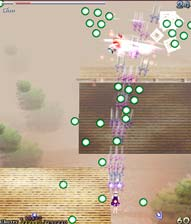
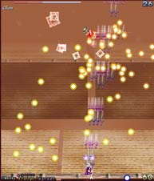
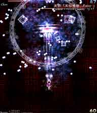
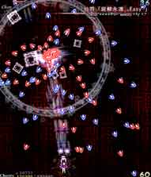

最初に途中で軌道が少し捻る赤弾と青弾を、次に中ボス時に出てきた緑弾の応用バージョンを撃ってくる。
最初の攻撃は画面下の方で「弾がどういう軌道をするか」見て避けましょう。
この攻撃は3面とかにも出てくるので、ココで基本を覚えておくと楽。
次の攻撃は、弾の拡がり方が広いので「2回目まで不動で3回目に大回り」という中ボス時のパターンが使えなくなってます。
弾と弾の隙間で避けましょう。
橙が星を描いてクロスする赤弾と青弾を撃つ攻撃。
1回目、3回目等の奇数の時はそのまま軌道が変わらないが、
2回目、4回目等の偶数の時は途中で軌道が変わり避けづらくなる。
偶数回の時の避け方は、画面中央で赤弾を右に移動して避けた後、青弾を左に移動して避けよう。
偶数回は当たり易いので不安ならボム！！

最初に自機狙いのくさび弾と丸弾を、次にバラ撒き黄色弾を撃つ。
くさび弾は自機狙いなので、自分の方まで弾を引き付けたら横にチョンと避けよう。
その際に地味に撃たれてある丸弾に被弾しないよう注意。
次のバラ撒き弾は見て避けるしかないので、薄い部分を探して避けよう。

橙が画面を動き回って弾をバラ撒き（でも固定弾）、橙が止まったかと思ったら弾を分裂させる攻撃。
分裂弾は軌道がランダムな上に小さく避けづらいので、不安ならボムを使ってしまおう。

橙が全方向に弾速がそれぞれ異なる弾を撃つ攻撃。
橙の真下ら辺りだと弾速が遅いので、弾速の遅い弾の方へ移動したりして避けよう。
右端、左端は弾速が速いのでなるべく中央付近にいる事を心がけよう。